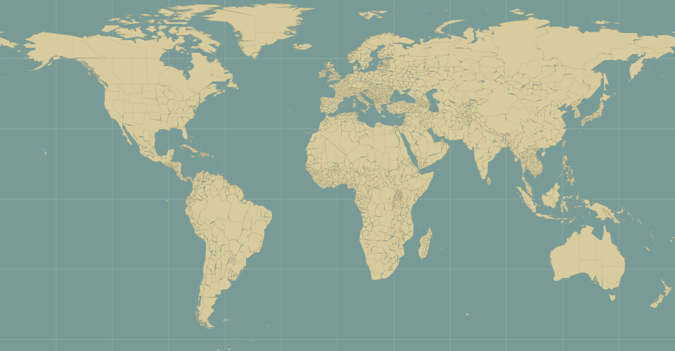
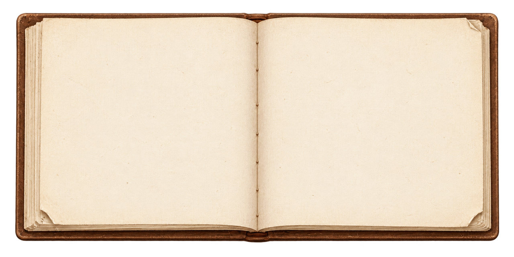
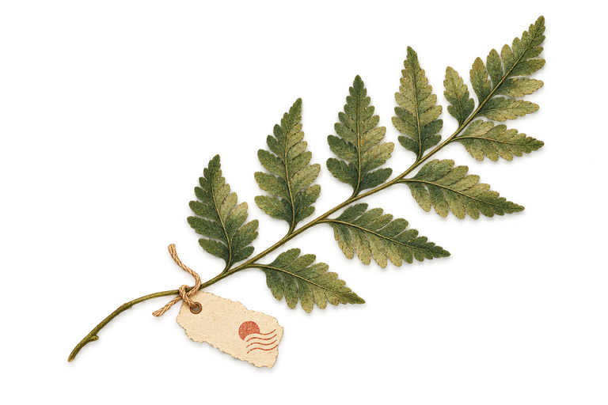

A little company on your desktop
Working or studying, your cat is right there.
Take a little break to say hello.
Even an ordinary day feels a little warmer.
A LITTLE COMPANION
A little cat for your desktop,
and a whole world to explore together.
Working or studying, your cat is right there.
Take a little break to say hello.
Even an ordinary day feels a little warmer.
Choose the next stop and take the scenic route.
Start somewhere familiar,
then see where your little explorer goes next.

CAT ATLAS · OUR LITTLE JOURNEY

Collect photos and make the memories your own.
Add your cat, jot down a few words,
and keep a little piece of every faraway place.